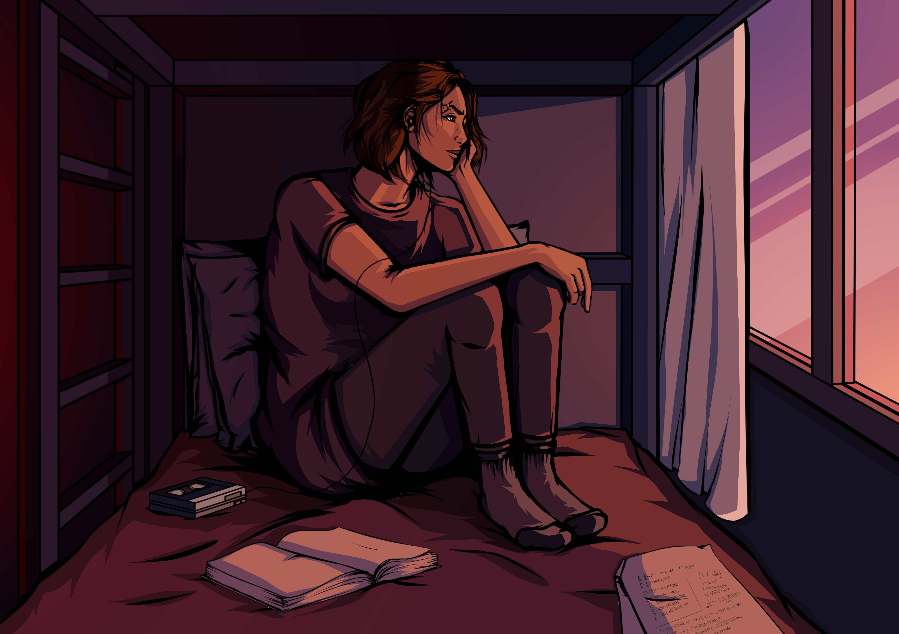
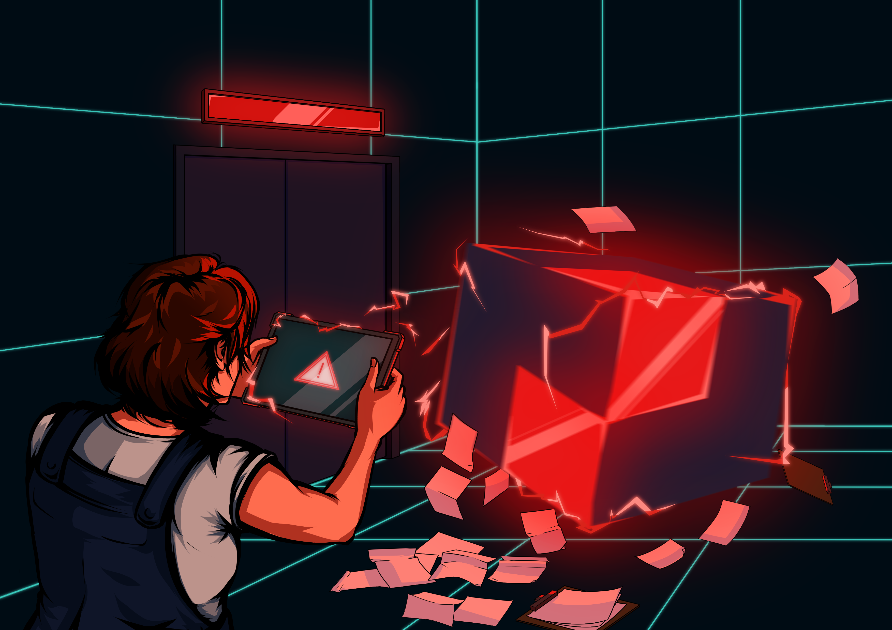

Project V
10 FEV 2025

Developed by: VORTEX
Genre: Narrative Adventure / Puzzle
Engine: Unity
The player controls Kalina Hansen, a maintenance engineer sent to an abandoned research facility to restore dimensional balance using the Taranis device.
Gameplay focuses on solving spatial puzzles through a 3D holographic interface, correcting vectors and manipulating matrices to stabilize the environment.
Warning: The content of the associated design compilation is in development. I am currently working on the full game, which will be released in the future. The Project V property is possessed by VORTEX.